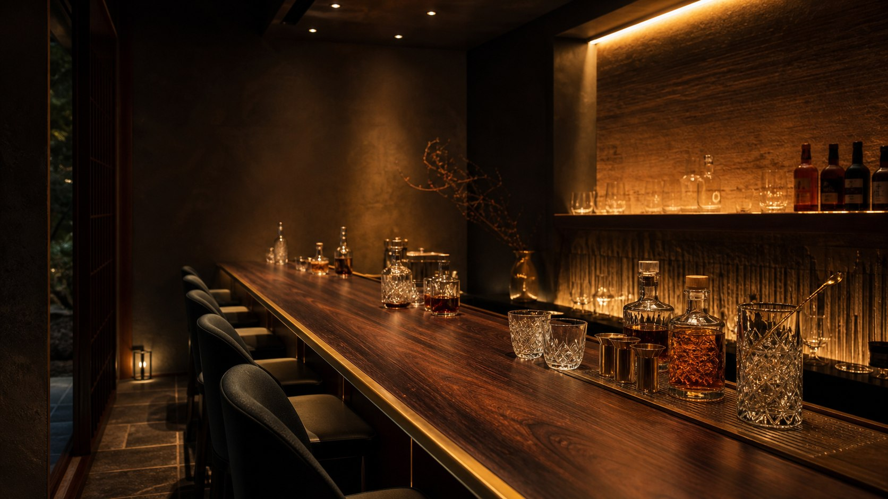

BAR KAGEは制作デモ用の架空店舗です。住所、営業時間、予約導線は実在しません。
Concept
余白まで味わう、夜の輪郭。
日本建築の暗がり、季節の香り、磨かれたグラスの透明感。BAR KAGEは、派手さではなく密度で記憶に残る夜を描くデモサイトです。
サイト全体はGitHub Pagesで公開できる静的構成として設計し、実予約・決済・CMS連携は含めていません。
Menu
和素材の香りを軸にした、架空のシグネチャーカクテル。
02Space
カウンター、個室、格子越しの光で構成する静かな空間。
03Access
路地の奥にあるような、控えめな到着体験。